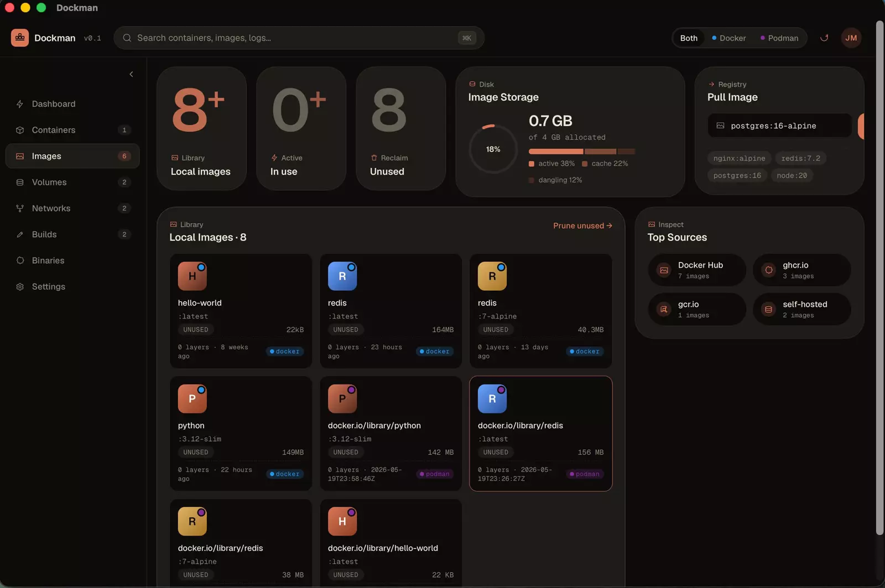
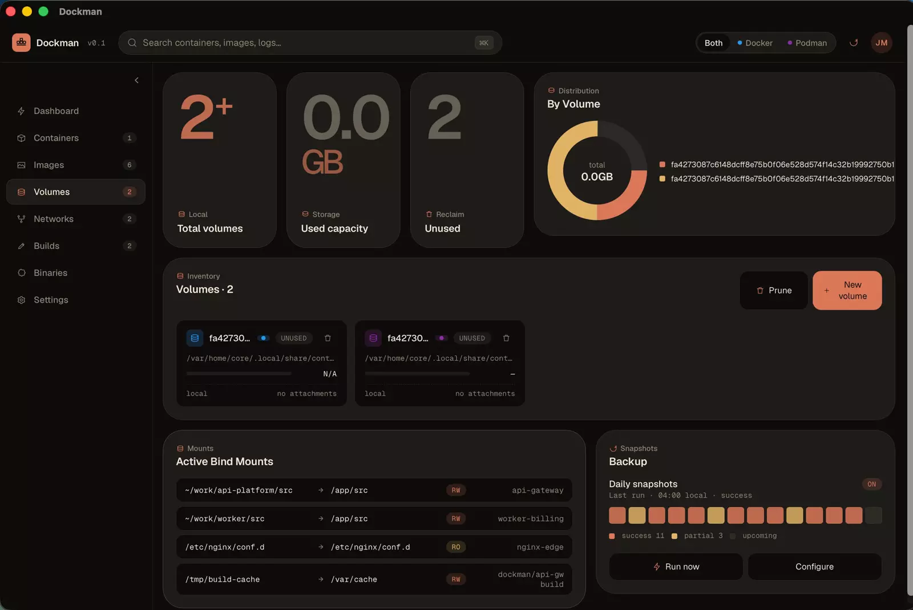
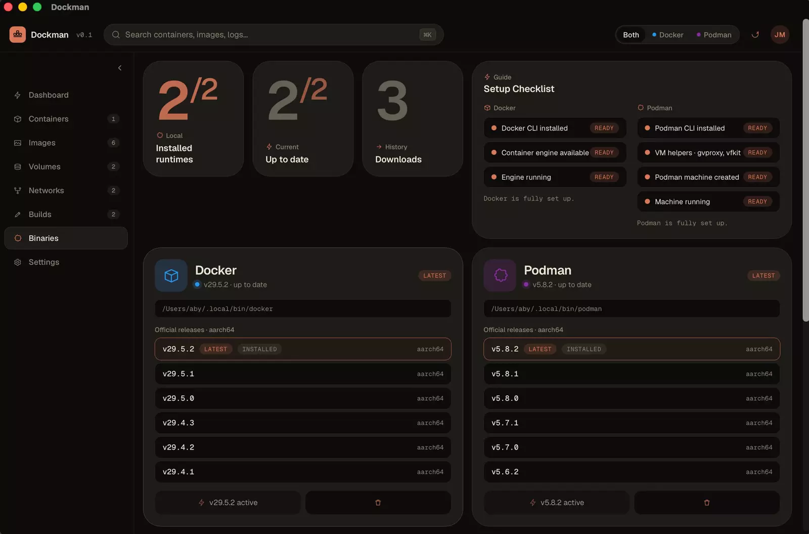
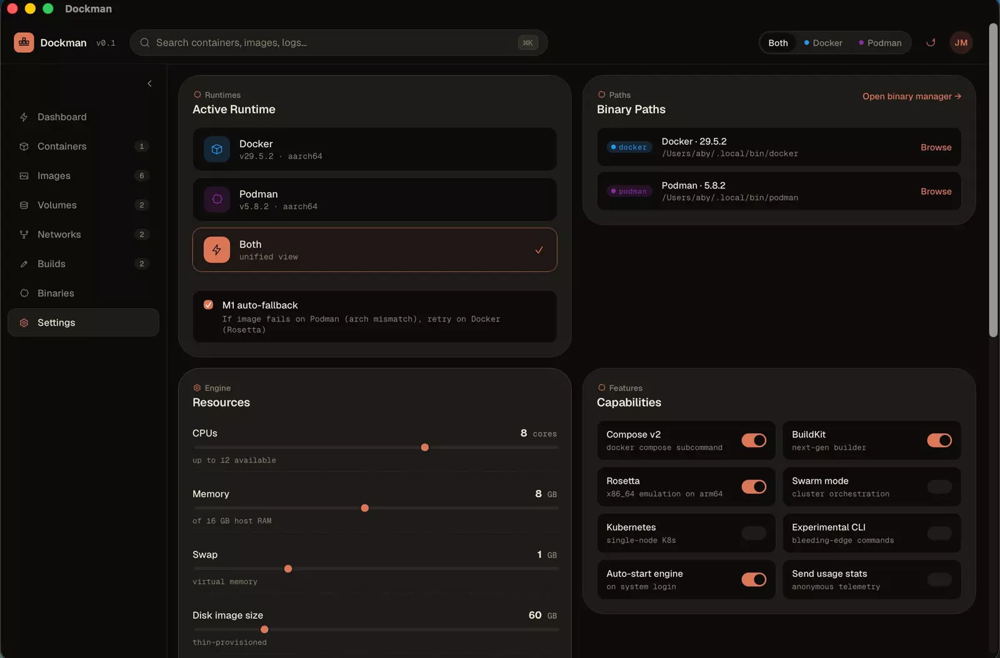

Platform 1
v0.3.0macOS
- .dmgApple Silicon
- .dmgIntel
Front pageTauri 2 · Rust · React
Dockman is a native desktop app that manages Docker and Podman together. Containers, images, volumes, networks, builds and the CLI binaries themselves, on one dashboard, with a filter to look at one engine or both.

Fig. 1The signature interaction
Two quays, one for each engine. Drag a crate from one to the other, filter the view like the real app does, or run a container and watch the scaffolding go up.
SimulationSample data only. This never talks to a real Docker or Podman.
This board needs JavaScript to move crates. The sample manifest below still reads fine without it.
Drag a crate across. Keyboard: Tab to a crate, then D sends it to Docker, P to Podman. Enter or a tap swaps it.
| Carrier | Running | Images | Volumes | Networks |
|---|---|---|---|---|
| Docker | 3 | 7 | 2 | 2 |
| Podman | 2 | 5 | 2 | 2 |
| In view | 5 | 12 | 4 | 4 |
Dispatch log
Feature storyWhat it is
Anyone who has run Docker and Podman on one laptop knows the shuffle: two command lines, two lists, two sets of habits. Dockman puts both engines on the same dashboard. Each gets its own card showing whether the engine is running, and the pages below it work with both.
You run a container on either runtime from the same composer, pick an image preset, name it, map ports, environment and volumes, and set a command override. A filter at the top does what the board above does: show both engines, or only one.
It is a native app, built with Tauri 2 and Rust under a React front end, so there is no bundled browser. It is in development, but it is usable today.
1 The retry is a Settings toggle, "Architecture auto-fallback". With it off, Dockman offers the Docker retry as a button instead. The board above plays this scenario with sample data.
2 Every container, count and log line on the dock board is invented sample data. The screenshots further down are real, taken from an earlier build of the app.
Fig. 2Bill of lading
Scroll to clear each line. The prints are real screenshots.
Running containers, cached images, volumes and networks. Twin Docker and Podman engine cards, an activity feed and one-click quick commands.

A filterable, groupable table. The Run Container composer takes image presets, a name, a runtime, port, env and volume mappings and a command override.
An interactive shell into any running container. Switch between sh and bash, and walk your command history with the arrow keys.

Browse the local library, pull from any registry, see a storage breakdown, prune what is unused and review top registries.

Sizes straight from the engine, which container mounts each volume, every bind mount, and one-click prune.

A topology map of what is attached to what, plus live inbound and outbound bandwidth.

Start image builds with layer caching, follow the build history and inspect the layer waterfall.

Install, update and switch between Docker and Podman CLI versions, with a setup checklist.

Pick the active runtime, resize the Podman machine, read engine facts, sign in to registries and check for updates.
Fig. 3Networks
The Networks page draws a topology map and tracks live inbound and outbound bandwidth. This chart is a sample topology, drawn as you scroll.
sample topology, real page below
Fig. 4Builds
The Builds page runs image builds with layer caching, keeps the history and shows the waterfall for each build. Below, a sample build stacks up as you scroll. Cached layers are hatched, new ones are solid.
Fig. 5Contact prints
Straight from the app. Click or press Enter on a print to open it large, then use the arrow keys to flip through.
Fig. 6Small things
Fig. 7Route of the cargo
Dockman does not ship its own container engine. It drives the Docker and Podman command line tools and shows you what they report.
The UI, built with Vite and React 18, with state in Zustand. One page per area: dashboard, containers, images, volumes, networks, builds, binaries, settings.
Rust commands handle containers, images, volumes, networks, builds, compose, exec and runtime detection. The app is a small native binary.
Rust spawns the docker and podman CLIs and reads their output. Use the ones on your machine, or install them from the Binaries page.
Fig. 8Download
v0.3.0 is out. Pick the installer for your platform from the Releases page.
Every installer is on the Releases page. They aren't code-signed yet, so read the first-launch notes below, or build from source.
Fig. 9First launch
macOS will say it can't verify Dockman (free side project, not notarized).
This applies to the installers on the Releases page, and to a build you copy to another machine. An app you build locally opens normally.
Open System Settings → Privacy & Security and click Open Anyway, or run this in Terminal:
xattr -dr com.apple.quarantine /Applications/Dockman.appSmartScreen shows a prompt. Choose More info → Run anyway.
Make the AppImage executable and run it:
chmod +x Dockman_*.AppImage && ./Dockman_*.AppImageOr install the .deb:
sudo apt install ./Dockman_*.debFig. 10Build from source
Clone it, then let make do the rest.
$ git clone https://github.com/AbyAbyss/dockman.git
$ cd dockman$ make deps$ make devBuilds the installer for your OS and installs it: /Applications on macOS, the .deb or .rpm on Linux, the setup .exe on Windows (run make from Git Bash). make build only builds; the installers land in src-tauri/target/release/bundle/. make help lists the rest.
$ make install